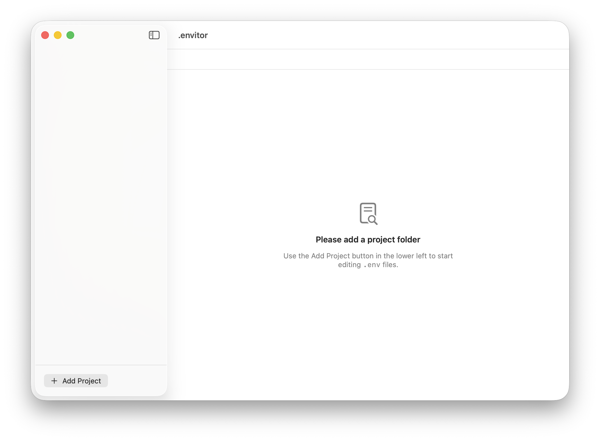
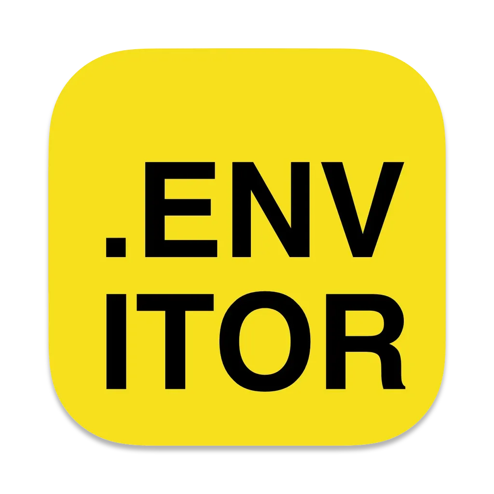
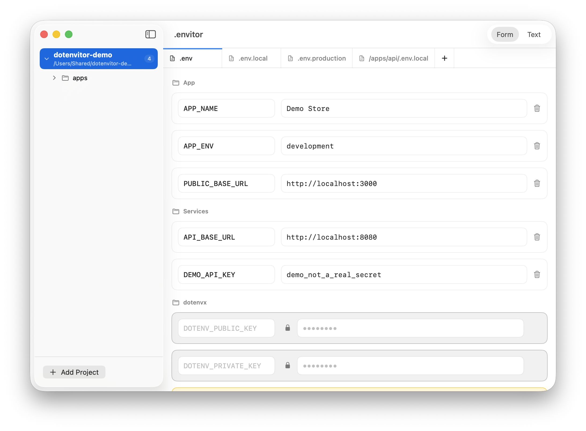
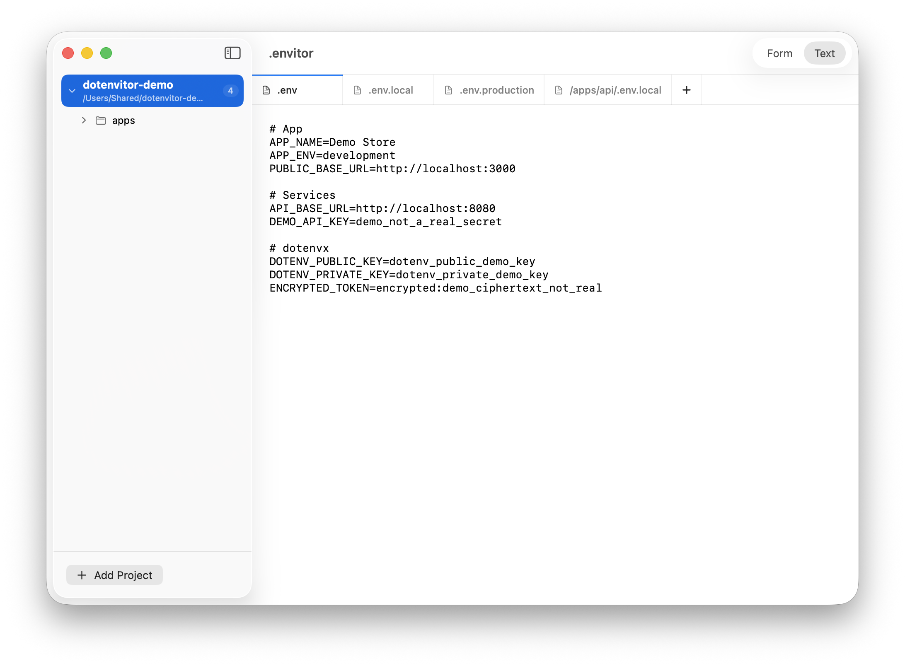
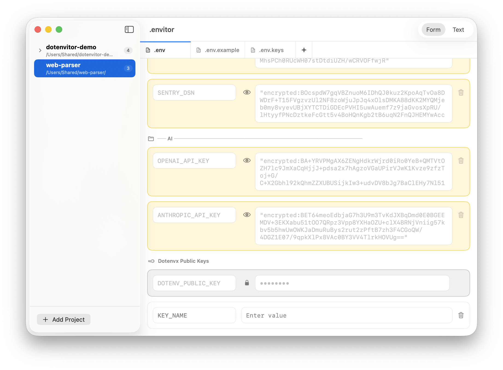

01
Add a project once
Start from a project folder and keep the relevant .env files one click away.


DotenvitorFind hidden .env files in your project and edit them directly, without handing sensitive values to your AI coding flow.

Start from a project folder and keep the relevant .env files one click away.

Tabs surface root and nested env files so you can move between variants quickly.
Use structured rows for normal edits, then switch to raw text when the file itself matters.

Recognize dotenvx-related entries and keep encrypted-value workflows visible in the editor.

Create a copy with every key/value pair, or duplicate only the keys when values should start blank.
Use descriptive comments as section headers so related keys stay together in the form.
Trailing comments stay attached to the row, making intent visible while you edit the value.
Commented-out keys are still shown, and can be uncommented when you want to use them again.
Jump from the selected project, folder, or env file directly to its Finder location.
Duplicate keys and repeated values are called out inside the row before they become harder to notice.
Add the project, choose the file, and make the change without leaving a focused macOS workflow.
Download Dotenvitor